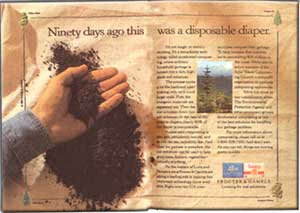
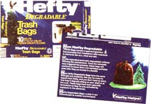
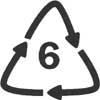

ENERGY & ENVIRONMENT
Green marketing and the politics of language.
The ads on this page were pulled, but this legal action did not discourage companies, such as th emakers of Sierra Anti-Freeze, from advertising toxic chemicals as "not harmful."
Could there be any image more chock full of meaning than that of a human hand scooped full of rich black soil? Full of potential and life itself, is there anything so good, so wholesome, so natural? This image appeared in a controversial Procter & Gamble ad for disposable diapers accompanied by this statement: "Ninety days ago this was a disposable diaper."
"Now that's amazing composting," you think to yourself. Hard to believe. But the fine print answers your skepticism: "It's not magic or wishful thinking. It's a remarkable technology called accelerated composting, where ordinary household garbage is turned into soil enhancer."
The environment is among the top five factors consumers think about when making a purchase, and from 10 to 15 percent of all new products are making some sort of environmental claim in their labeling and advertising. This may sound encouraging if you believe it shows manufacturers are beginning to take the environment into consideration when they make their products. But it turns out that only some of these claims are reasonable. In the words of environmental lobbyist Lance King, "More and more companies are realizing that environmental issues are strategic, but in response manufacturers have said not, `How can we change our product,' but "What can we say about our product."
Companies have not all put their money where their mouth is. Some offenders the Federal Trade Commission (FTC) has penalized for making deceptive environmental marketing claims: The Orkin Exterminating Company, Inc., referred to its lawn pesticides as "practically nontoxic," Amoco said that you can recycle its polystyrene products and packaging materials, Hefty claimed its plastic bags would biodegrade in landfills, and most recently, Safe Brands Corporation, Warren Distribution, Inc., and ARCO Chemical Co. claimed their product, Sierra AntiFreeze, was "essentially nontoxic," "environmentally safer," and "biodegradable." In November 1995, the companies agreed, under pressure from the FTC, to drop the claims and replace them with a warning that Sierra Anti-Freeze may be harmful if swallowed.
As the environment became the hottest marketing trend in the early '90s, these claims led to a flurry of consumer protection activity, both judicial and legislative, to try to define this nebulous language of "safer" (safer than what?), "essentially nontoxic," and so on. But the language debate is far from settled. In the past few months, the strongest environmental marketing laws in the country have been repealed and the FTC's five-year review of its "guidelines," which is taking place at the moment, seems likely to produce only a minimum of changes. There's little possibility that the guidelines will become binding "rules" any time soon.
The environmental language debates really began in 1991, when a Green Marketing Task Force was formed, consisting of the attorneys general of 10 states. The task force went after cases in which terms like biodegradable, compostable, and ozone friendly were misleading if not blatantly false, including the landmark case of Procter & Gamble's compostable diapers.
It's true, you might be able to compost parts of a disposable diaper, but not 100 percent of the diaper. And the real problem is that composting facilities that are capable of turning a plastic disposable diaper into soil enricher are extremely scarce. So composting this product is theoretical, not practical.
According to a task force agreement eventually signed by Procter & Gamble, the attorneys general concluded that "Procter & Gamble's labeling for samples and its advertising misrepresented, directly and by implication, that Luvs and Pampers diapers are 100 percent compostable, that facilities that accept disposable diapers for composting now exist on a wide basis nationally, and that composting facilities for mixed solid waste are being rapidly developed and built, when that is not the case. Procter & Gamble denies that its labeling for samples and its advertising are misleading:'
The agreement required Procter & Gamble to limit its claims. For example, Procter & Gamble must "clearly and conspicuously disclose" the percentage of the diaper that is compostable. Although the agreement technically applied only in states that participated in the task force, the effect was wider. According to Andrea Levine, a former Assistant Attorney General of New York who participated in the task force, due to the cost of labeling and advertising, a company is unlikely to make claims on a product in one locale that can't be made in another. Procter & Gamble eventually pulled its ads across the country, not just in the states where the agreement applied.
Perhaps the task force put a scare into some companies, but its impact on environmental marketing standards was greatly limited by the fact that it only pursued misleading claims on a case-by-case basis.
And the task force did not directly address the fundamental questions of the language of environmental marketing. When can you say something is compostable without badly bending the truth? And when you call something recycled, does that mean it's 100 percent recycled or 2 percent recycled? And is that post-consumer waste or simply mill scraps? And what exactly do you mean by environmentally friendly and recyclable? Theoretically, almost any kind of plastic or metal is recyclable. But in all those chasing arrows stamped on plastic products, only the ones with the numbers one and two are widely recyclable. In most cases, you might as well throw the other containers numbered three and up into the trash. Once again, their recyclability is only theoretical.
After the formation of the task force, the FTC created the Green Guidelines for environmental marketing. The guidelines are to date the only federal regulation of environmental marketing claims. The guidelines generally address the use of the terms recyclable, degradable, compostable, recycled content, source reduction, refillable and o zone-safe. But the Green Guidelines are not rules-they are, well, guides. They do not codify definitions or set standards for the use of environmental terms; they offer broad parameters and examples of what the FTC might consider a deceptive claim. Fundamentally, they are recommendations, and are enforceable on a case-by-case basis when complaints are raised against individual companies. The FTC is in the process of reviewing these guidelines and any revisions will be made early this year.
Shortly after the creation of the FTC guidelines, the state of California passed a truth-in-advertising law that became the country's only real environmental marketing law. The law, which was repealed in October 1995, set very specific minimum standards for claims. For example, under the California law the term recycled could only be used if the product consisted of at least 10 percent post-consumer material. The term recyclable could only be used if one recycling facility capable of recycling those products existed per 300,000 people. Ten industry and trade associations-the likes of the Association of National Advertisers (ANA) and the Society of the Plastics Industry-filed suit to overturn the California law. The California Supreme Court upheld the law, except that the suit succeeded in striking the definition of recyclable from the law. Removing it was a significant blow to the character of the law. Richard Denison, senior scientist from the Environmental Defense Fund says: "Frankly, I think that entire recyclable claim is deceptive. Any product is recyclable if you put enough money into it, but can it be recycled in that community? You can't tell by the label." Industry continued to challenge the law on the basis that it infringed on the constitutional right to free speech.
"California is trying to take control of the dictionary," ANA Executive Vice President Daniel Jaffe explained to the press. The ANA brought the suit against the California law all the way to the United States Supreme Court in October 1995, where once again it was upheld.
"Commercial speech has a very different standard of protection than noncommercial speech," says the EDF's Denison. "The First Amendment does not allow you to lie for profit."
Lance King says: "It was a significant victory that the U.S. Supreme Court turned down the petition [to overturn the law]. It makes new law, in that it establishes a state's constitutional right to restrict these types of claims."
But politics prevailed over the Supreme Court's decision, and the law was repealed in the California State Legislature a few days later. The marketing law was replaced by the FTC guidelines. Several states-Indiana, Wisconsin, Maine, Rhode Island, and now California-have adopted the FTC guidelines as law, which in turn makes them binding.
The FTC guidelines may be broader than the California law, but they are much more general. For example, the 10 percent postconsumer-waste minimum is no longer a required standard for the use of the recycled label. Seven out of 10 of the most recent FTC actions involve the deceptive use of the word recycled.
The FTC, following the clause written into the original guidelines requiring it to review the guidelines every five years, is in the middle of the review process. Both environmentalists and FTC officials predict that the guidelines will not become stricter, nor will they become rules that are in any way enforceable by penalty of law.
Former Assistant Attorney General of New York Andrea Levine, who worked on the Green Marketing Task Force, says she thinks that the guidelines have done some good: "What we saw five years ago we don't see on the market now. It sends a message they're [the guidelines] going to be enforced." The EDF and Californians Against Waste, however, believe that the guidelines will remain largely the same, less because of their effectiveness and more because of the nation's current antiregulatory political climate. As manufacturers continue to rush to appear green, the guidelines will remain vague and voluntary California's stringent truth-inadvertising law may be constitutional, but it is not politically palatable.
Recyclable and recycled claims are the first items up for review by the FTC this year. Currently, there are no minimum standards for th euse of the chasing-arrows symbol.
|
 The FTC calls this ad misleading. Starch in bags degrades in landfills, but plastic never will. |
 |
 |